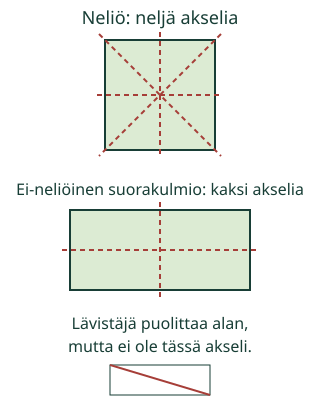

<link rel="stylesheet" href="lesson.css" />

<section data-teaching-step="1" data-lesson-role="teaching-step">
<section class="lesson-intro"><h2>Mihin peiliviiva sopii?</h2><p>Aava taittaa paperikyltin. Osuvatko reunat toistensa päälle? Voisiko samaan kylttiin sopia useampi taitos?</p><p><strong>Tutkin, osuuko kuvio peilattaessa itsensä päälle.</strong></p></section>
</section>


<section><section data-teaching-step="2-frame1" data-lesson-role="teaching-step"><h2>Taita, avaa ja katso</h2><p>Ota neliön muotoinen paperi. Taita vastakkaiset reunat kohdakkain. Avaa. Taitos on <strong>symmetria-akseli</strong>: kuvio peilautuu viivan yli itsensä päälle. Myös vastakkaisten kulmien kautta kulkeva taitos toimii neliössä.</p><figure data-lesson-role="worked-example"><figcaption>Viivan suunta voi vaihdella. Kuviossa voi olla useampi oikea akseli.</figcaption></figure></section>
<section data-teaching-step="2-frame2" data-lesson-role="teaching-step"><h3>Mikä säilyy peilissä?</h3><p>Jokaisella pisteellä on pari yhtä kaukana viivan toisella puolella. Parien välinen suunta kulkee viivan poikki suorassa kulmassa. Viivan omat pisteet pysyvät paikoillaan.</p></section>
<section data-teaching-step="2-frame3" data-lesson-role="teaching-step"><h3>Ansakohta: kaksi yhtä suurta alaa ei riitä</h3><p>Leikkaa paperista suorakulmio, joka ei ole neliö. Sen lävistäjä jakaa alan kahteen yhtä suureen kolmioon. Mutta lävistäjää pitkin taitettuna pitkä reuna ei osu lyhyeen reunaan: tämä viiva ei ole symmetria-akseli.</p><p>Neliö on myös suorakulmio. Siksi emme sano, ettei suorakulmion lävistäjä voisi koskaan olla symmetria-akseli. Neliössä se toimii.</p></section></section>


<section data-symmetry-lesson><section data-teaching-step="3-1" data-lesson-role="teaching-step" id="taittomalli">
<div data-lesson-context-source="workbench" data-audience-columns><div data-visual-column><h2>Kokeile taitosta</h2>
<p>Ennusta ensin. Valitse kuvio ja viiva. Liikuta taitosta omaan tahtiin tai pienin askelin ja palauta alkuun.</p>
<div data-model></div>
<p data-caption aria-live="polite"></p></div><div data-response-column><label>Kuvio<select data-figure><option value="square">Neliö</option><option value="rectangle">Suorakulmio, ei neliö</option><option value="triangle">Tasakylkinen kolmio</option></select></label>
<label>Tutkittava viiva<select data-line><option value="vertical">Pystyviiva keskellä</option><option value="horizontal">Vaakaviiva keskellä</option><option value="diagonal1">Vinoviiva 1</option><option value="diagonal2">Vinoviiva 2</option><option value="offset">Pystyviiva sivummalla</option></select></label>
<label>Taitto: 0 on auki, 100 on taitettu<input type="range" min="0" max="100" step="1" value="0" data-fold /></label>
<p><button type="button" data-action="fold-step">Taita vähän lisää</button> <button type="button" data-action="unfold">Avaa taitos</button></p>
<p>Oranssi puolikas kuvaa paperia, joka nousee ruudun tasosta ja taittuu viivan ympäri. Se näyttää keskivaiheessa kapeammalta katselusuunnan vuoksi. Paperin ei oleteta venyvän. Katkoviivoitettu harmaa reuna näyttää alkuperäisen kuvion.</p></div></div>
</section>
<section data-teaching-step="3-2" data-lesson-role="teaching-step"><section data-practice><h2>Löydä sopivat viivat</h2><p data-axis-task></p><p>Paina kuvia valitaksesi tai poistaaksesi viivan. Viivaehdotus näkyy punaisena. ✓ näyttää valintasi.</p><div data-axis-board></div><p><button type="button" data-action="axis-check">Tarkista viivat</button> <button type="button" data-action="axis-clear">Poista valinnat</button> <button type="button" data-action="axis-next">Toinen tehtävä</button></p><p data-feedback role="status" aria-live="polite">Tutki ja kokeile.</p><details data-lesson-role="hint"><summary>Apua peiliviivan tutkimiseen</summary><p>Katso koko reunaa. Kun taitto on valmis, osuvatko kaikki kohdat toistensa päälle? Voit avata taittomallin tähän ja tutkia tehtävän kuviota. Valitse mallista tutkittava viiva. Mallin käyttäminen ei valitse tai tarkista tehtävän vastauksia. Yksi löytynyt akseli ei tarkoita, ettei muita olisi.</p>
<details data-lesson-role="worked-example" data-lesson-context="symmetry-current" data-context-source="workbench" data-context-preset="current-shape" data-context-reveal="model"><summary>Tutki tehtävän kuviota taittamalla</summary><p data-context-fallback>Malli on ilman JavaScriptiä alkuperäisessä kohdassaan: <a href="#taittomalli">avaa mallin kohta</a>.</p><div data-context-slot></div><button type="button" data-context-close hidden>Sulje malli</button></details>
</details></section></section>
<section data-teaching-step="3-3" data-lesson-role="teaching-step" data-audience-spacing="compact"><section><h2>Rakenna ruutujen peilikuva</h2><p data-grid-task></p><p>Tummat ✓-ruudut ovat lähtökuvio. Napauta toiselta puolelta ruudut, jotka muodostavat sen peilikuvan. Katkoviivareuna on peiliviiva. Rivit lasketaan ylhäältä, sarakkeet vasemmalta.</p><div data-grid role="group" aria-label="Peilikuvan ruudut"></div><p><button type="button" data-action="grid-check">Tarkista ruudut</button> <button type="button" data-action="grid-clear">Poista omat ruudut</button> <button type="button" data-action="grid-next">Vaihda peiliviivan suunta</button></p><p data-grid-feedback role="status" aria-live="polite">Rakenna peilikuva.</p><details data-lesson-role="hint"><summary>Apua ruutujen pareihin</summary><p>Aloita viivan vierestä. Viivan vieressä olevaa ruutua vastaa viereinen ruutu vastakkaisella puolella. Seuraava pari on yhden ruudun kauempana kummallakin puolella. Pystyviivassa pari pysyy samalla rivillä. Vaakaviivassa pari pysyy samassa sarakkeessa. Kopion siirtäminen sellaisenaan viereen ei yleensä ole peilaus.</p></details></section></section></section>


<section data-teaching-step="4" data-lesson-role="teaching-step">
<details data-lesson-role="teaching-step"><summary>Lisätutkimus: kuvion asento vaihtuu</summary><p>Käännä paperineliötä pöydällä. Sen neljä akselia kääntyvät mukana: viiva ei tarvitse pysty- tai vaakasuuntaa toimiakseen. Piirrä halutessasi kuvio, jolla ei ole yhtään symmetria-akselia. Tarkista peilillä tai taittamalla.</p></details>
</section>

<details class="teacher" data-lesson-role="teacher-note"><summary>Opettajalle: mallin tarkoitus ja rajat</summary><p>Vuosiluokat 3–6. Vaadittu M-GEO-04 antaa tasokuvioiden ominaisuudet ja neliön kuulumisen suorakulmioihin. Viivan yli peilaus opetetaan tässä; koordinaatteja tai kulmien astemittalaskuja ei oleteta. Tasakylkisen kolmion nimitys avataan: kaksi yhtä pitkää sivua, kärki niiden välissä.</p><p>Offline: anna paperineliö, ei-neliöinen suorakulmio ja peili. Anna oppilaan ehdottaa taitoksia ja tutkia ne itse. Nimeämisen sijasta voi osoittaa sopivaa viivaa. Ruudukossa tutkitaan ruudun paikkoja ja täyttöä, ei lukujen lukusuoraa. Hahmot, ohjainten tekstit ja apuviivat eivät kuulu tarkistettavaan matemaattiseen kuvioon.</p><p>Taittomalli on ihanteellisen ohuen paperin kohtisuora tasoprojektio. Liikkuva puolikas jäykkänä kiertyy akselin ympäri; näytön kapeampi projektio ei ole muodon venymistä. Ruudulla ei todenneta fyysistä taittamista. Neliössä on neljä akselia, ei-neliöisessä suorakulmiossa kaksi, tässä kolmiossa yksi.</p><p>Ensimmäinen tehtävä hyväksyy minkä tahansa epätyhjän joukon toimivia neliön akseleita. Kaikki-tehtävät tarkistavat täsmälleen kaikki tarjotut toimivat viivat. Ruudut voi valita missä järjestyksessä tahansa. Mallin tutkiminen ja ohjeiden avaaminen eivät muuta erillistä harjoitusvastausta. Tulos koskee vain nykyistä tehtävää ja valintaa.</p><p>Matalan panoksen harjoitus, ei pisteitä, tallennusta, oppijahistoriaa tai itsenäisen/pysyvän hallinnan päätelmää. Lite sisältää myös koordinaattipeilauksen; se jää tämän ydintavoitteen ulkopuolelle. Ilman JavaScriptiä kuvien perustelut ja paperitehtävä säilyvät.</p></details>

<section data-teaching-step="5" data-lesson-role="teaching-step">
<section><h2>Lopuksi</h2><p>Näytä neliölle kaksi eri symmetria-akselia. Miksi saman alan puolittava viiva ei aina kelpaa? Vastaa osoittamalla, paperilla tai omin sanoin.</p></section>
</section>

